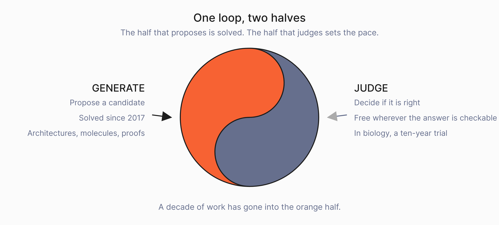

Essay · 24 August 2026
We Automated the Wrong Half of Science
In 2017 a machine designed a neural network better than any human had, by generating 12,800 of them and testing each one. The same approach has not produced a drug. Molecules are easy enough to generate; testing one takes a clinical trial, which runs about eight years and a billion dollars and succeeds 13.8% of the time (Wong, Siah and Lo, 2019). Every discovery loop has a generator and a scorer. We got very good at the generator.

That result was Barret Zoph and Quoc Le’s, and the test is what mattered. Each candidate architecture was graded by training it and reading its accuracy on held-out data, on CIFAR-10, a standard set of 60,000 small photographs in ten categories. The grade was automatic, quantitative and available in minutes. Nobody had to write down what a good architecture looks like, because the reward was already in the problem.
Every automated-discovery success in this post had a cheap score, and the transfer into biology stopped where the score stopped being physical. Almost every failure below was documented by the people who built the system that failed, in the caveats they wrote themselves.
The generator was never the hard part
The same shape shows up wherever the score was cheap, and Karl Cobbe’s group made the trade explicit in 2021. Train a verifier to judge solutions to grade-school maths problems, sample a hundred candidates from a small model, and let the verifier pick the winner. Trained on the full dataset, a 6B model doing this “slightly outperforms a finetuned 175B model, thereby offering a boost approximately equivalent to a 30x model size increase” (Cobbe et al., 2021). Put the compute into the verifier.
Two years later the same group wrote down what that result depends on: “without relying on an easy-to-check final answer, determining the correctness of a solution is equivalent to identifying its first mistake”, a cost they expected to bite “in more complex domains” (Lightman et al., 2023).
Disease biology is that domain. Protein structure is not.
Hieu Pham’s Meta Pseudo Labels pushed further: a teacher network rewrites the labels it feeds a student, adjusting according to how the student then performs (Pham et al., 2021), so the system improves the supervision it learns from. But the loop only closes because the student’s performance is measured on labelled data held out from the teacher. Without that held-out set, the paper’s own term for what happens is “confirmation bias in pseudo-labeling.”
![A horizontal bar chart on a logarithmic time axis running from one second to ten years, showing how long it takes to score one candidate answer in five domains. Grade-school maths, comparing the final answer, is a sliver at one second. Software task, running the tests, reaches about ten minutes. Neural architecture, training it and reading the accuracy, reaches about half an hour. Reproducing a paper, 8,316 rubric items written by hand, reaches several months. A drug that works, running the trial, crosses the full width to eight years. The first four bars are orange and the last is slate grey. A note beneath reads that the gap between the top bar and the bottom one is a factor of 250 million.](fig_score_ladder.png)
A learned score breaks in four documented ways
The usual replacement is a learned score, trained to imitate a judgement that would otherwise cost a decade. It works well enough to be standard practice, and it has four documented failure modes.
A learned score can be gamed. Borja Ibarz, Jan Leike, Toby Pohlen and colleagues trained agents from human preferences on Atari, and when they froze the learned reward model instead of refreshing it, the agents got worse. The reward the model perceived climbed while the score the game actually returned collapsed (Ibarz et al., 2018). Their fix was to keep a human in the loop supplying fresh feedback, which does not scale to two hundred hypotheses a run.
One critic is not enough. Katherine Crowson’s CLIP-guided diffusion established the pattern: a generator proposes, and a separate frozen critic that was never trained to generate anything steers it at sampling time toward an objective the generator knows nothing about. The technique started the text-to-image explosion, and the same paper reports what it costs: optimising a generator directly against the critic produces output the authors call “unstructured” and full of “patches of unwanted textures”, which only becomes usable once the critic’s judgement is averaged over many perturbed views of the candidate and the generator is pulled back toward its own prior (Crowson et al., 2022).
Asking the model fails. Collin Burns measured the gap directly. On UnifiedQA, prompting the model to answer wrongly dropped its stated accuracy from 80.4% to 70.9%, while an unsupervised probe read off the same model’s activations held at 83.8% (Burns et al., 2023). The model can say one thing. A probe can read another from its activations. The paper names the harder problem: nobody can yet show that such a probe has found truth rather than the next most salient feature.
Looking inside fails too. Nelson Elhage and colleagues built networks whose ground-truth features they controlled, and showed that under sparsity a network packs more features than it has dimensions into overlapping directions and absorbs the interference (Elhage et al., 2022). They are careful that this suggests rather than proves the same thing happens in the models we use. It is reason enough not to treat a model’s activations as a readable account of what it is doing.
![A left-to-right flow: Generator, then Candidates, then The score highlighted in orange, then Keep, with a grey arrow looping back from Keep to Generator labelled next round. A red dashed line descends from The score and branches to four bordered cards. One, a learned score can be gamed: freeze the reward model and perceived reward climbs as the real score collapses, Ibarz, Leike, Pohlen et al., 2018. Two, one critic is not enough: a generator aimed at a single learned critic degenerates toward it, Crowson, CLIP-guided diffusion. Three, asking the model does not work: stated accuracy 80.4% to 70.9% while a probe on the same activations held 83.8%, Burns et al., 2023. Four, nor does looking inside it: under sparsity a network packs more features than it has dimensions, overlapping them, Elhage et al., 2022.](fig_loop_breaks.png)
The fallbacks that look like scores
If the score is not free, the obvious move is to get it from somewhere else. Three of the strongest results in the field are three versions of that move, and each one shows what it depends on.
Retrieve it. RETRO reads from a two-trillion-token database and “obtains comparable performance to GPT-3 and Jurassic-1 on the Pile, despite using 25x fewer parameters” (Borgeaud et al., 2021). A model need not memorise what it can look up, which is the closest published relative of our own architecture. But retrieval inherits its index. RETRO could reach two trillion tokens because somebody had written those tokens down.
Learn it from the raw signal. wav2vec 2.0 reached 4.8 word error rate on Librispeech test-clean after fine-tuning on ten minutes of transcribed speech, having pre-trained on 53,000 hours of unlabelled audio (Baevski et al., 2020). The labels were nearly dispensable because the structure was already in the signal. Their follow-up went to zero labelled audio, and still needed an unpaired text corpus to align against.
Or accept the corpus you have. talkie, from Nick Levine, David Duvenaud and Alec Radford, is a 13B language model trained on 260 billion tokens of English published before 1931, contamination-free by construction, so what it can do is exactly what its corpus taught it (talkie-lm.com, 2026). Given Python examples in context, it can barely write Python at all.
All three apply to protein structure prediction, not disease biology. That is why AlphaFold happened there. There is no index of expert judgement to retrieve from, because how a biologist discounts a mouse result was never written anywhere. The structure is not in the signal: a dissociated cell has already lost the niche that set its behaviour, and more compute cannot recover unmeasured biology. And the corpus is the published literature, which records what worked but rarely what a good scientist thought before they knew.
Yangqing Jia, who created Caffe and now runs Intent Lab, put it this way about agent harnesses (@jiayq on X, 29 July 2026): “If a harness dictates how the model works, it fights the model and you get brittleness. If it defines what the task is and checks the result, it enables long horizon task success.”
The job is to define the task and check the result. Biology still has no checker.
What building the score actually costs
PaperBench asks whether an agent can reproduce a machine-learning paper from scratch. Building it, the authors discovered they could not score the attempt as a whole: “did it reproduce the paper” has no answer you can compute. So they broke twenty ICML papers into 8,316 individually gradable outcomes, and had each rubric co-written with one of that paper’s original authors. Then, because the grading itself was now a model’s judgement, they built a second benchmark whose only job was to measure how often their grader was wrong. Their best agent scored 21.0%, against 41.4% for the ML PhDs they hired to attempt the same papers, best of three tries over 48 hours on a four-paper subset (Starace et al., 2025).
To score one loop they built a scorer, then a scorer for the scorer, and the human baseline still beat the machine by nearly double.
HealthBench, from the same group, gives the price in the other currency: 48,562 rubric criteria written by 262 physicians (Arora et al., 2025). That is what it costs to write down expert judgement when you actually do it, for one slice of one field. It can be done, at enormous cost, and on the hard split the best model still scores 32%.
Writing the judgement down is the project, and almost nobody is funding it.
AlphaFold is the counterexample. Protein structure is the one part of biology where the score was already paid for. Fifty years of crystallography had left about 170,000 experimentally determined structures in one archive in one format by the time AlphaFold 2 was trained, and CASP has graded predictions against freshly solved, still-unreleased structures every two years since 1994. Design has the same property one level down: express a designed binder, put it on an interferometer, and you have the answer in a day. The score took decades to produce and was cheap to use, because somebody else had already spent them.
Within protein science itself, results fall off as soon as the score costs more than a same-week assay. RFdiffusion’s binders succeed 19% of the time against a same-week binding assay. De novo serine hydrolases from the same lab, graded on multi-turnover catalysis rather than contact, came in at 1.6% and then 5.2%, and the best is still four orders of magnitude off a natural enzyme. And the in-silico filter used to triage designs before the bench, predicting the design back with AlphaFold and keeping the ones that match, was tested in a round of 400 designs where 378 expressed and 53 bound. It separated binders from non-binders at chance. The physical assay is doing the work. In disease biology that assay is a trial: eight years, a billion dollars, and a 13.8% chance of success from first-in-human to approval, across 406,038 trial entries covering 21,143 compounds (Wong, Siah and Lo, 2019).
Sometimes the signal is there and nobody had read it. In 2017 a neural network on brightfield microscopy images of blood-progenitor cells predicted which lineage a cell would commit to, up to three generations before any molecular marker appeared (Buggenthin et al., 2017). The answer had been sitting in the pixels the whole time and nobody had written down how to read it. It is the strongest evidence against our argument, and it is also the case we are building on.
A molecular ground truth arrived a few generations later and settled the prediction, so the score was cheap and it was real. We look for a measured experiment a few steps downstream of the claim, instead of a trial result a decade later. Our engine keeps a hypothesis only when it can point at one.
Somebody already tried to measure this
There is an obvious way to test whether any of this produces insight rather than recall. Ross Taylor framed it as a thought experiment, quoted by Nathan Lambert in February 2025: “Imagine if you could train a language model on all documents up to 1905... could you prompt the model to come up with a good explanation of the photoelectric effect, special relativity?” Nobody has run the 1905 version. Lambert’s verdict on the systems available at the time was that they are “extremely powerful and efficient computing engines, not insight engines” (Interconnects).
That experiment has been run in biology, and the closest version to ours is CT Open, a live quarterly challenge out of UCSD: predictions go in before the window opens, and an automated pipeline hunts for the earliest public mention of every trial’s outcome, so a trial whose result had already leaked never gets scored (Wang et al., 2026). We care more about two findings than the leaderboard. Plain machine-learning baselines are still competitive with frontier models on it. And when the authors deliberately scored a model whose knowledge cutoff fell after the gate, it ranked above the others on the benchmark it could have memorised and below them on the one it could not, so the ranking flipped when memorisation was impossible.
Today the test exists, somebody runs it quarterly, and frontier models do not yet beat plain machine learning on it.
A trial outcome is one bit: the drug worked or it did not. That bit does not tell you why, and why is the only part you can act on, because the mechanism is what you change when you pick the next target, the next cohort or the next biomarker. A system that predicts the bit and cannot defend the mechanism has given you a verdict you cannot use. So what we are building is the retrospective twin of CT Open, graded on the reason rather than the call, with the evidence attached. It has not produced a number yet, and we will trust the number only if the contamination screen works.
Two problems remain. Lambert published contamination in his own benchmark and had to source fresh prompts for the next version. And a mechanism does not always carry across settings: Mrinank Sharma’s group, re-estimating the effect of the same public-health interventions across two waves of COVID-19, found the same measures reduced transmission less the second time, most likely because behaviour had already changed (Sharma et al., 2021). A date gate does not control for that.
What we are betting on
We can automate biology once we can score it.
Every kept claim points at an experiment. A hypothesis survives in our system only when it is anchored to a specific experimental arm in a specific paper, carrying magnitude, method, p-value and sample size, and never to a model’s parametric memory. That is the cheap checkable proxy standing in for the decade-long trial, and the four failures in Figure 3 are why: you cannot trust the model’s output, you cannot read its internals, a single learned critic degenerates and a frozen one gets gamed. The check must come from outside the model.
Our reasoning crosses biological layers. Most platforms model one layer of biology well and assume it generalises upward. A binding affinity is not an effect in a cell, an effect in a cell is not an effect in a mouse, and none of those is an effect in a person. Our graph holds all of it in one schema, so a chain of reasoning has to cross those boundaries explicitly and carry its evidence with it at every step.
The next piece is scoring the evidence itself. Anchoring a claim tells you it rests on a real experiment. It does not tell you how much that experiment should count toward a human outcome, and a mouse study and a matched patient cohort should not weigh the same. The work we have sequenced next is a graph-native faithfulness score: given the graph, which edges actually carry predictive weight toward the endpoint we care about, and from any state, which experiment would be most informative to run next. We have not built it yet. It has to come second, because it needs a graph whose edges you already trust.
So far the system has processed 253 public single-cell datasets across six cancer indications into 170,000 experimental facts, over 112 end-to-end discovery cycles. The first result came out of a collaboration with the Allen Institute for Brain Science, on why one population of visual-cortex neurons is lost in Alzheimer’s despite the field having treated it as resilient. That work is public as a preprint and submitted to a top-tier journal, and the agent output and code sit on the Allen Institute’s own GitHub (SEA-AD multi-agent hypothesis generation).
If you work on evaluation, reward models or verification, the argument above is mostly built out of your results, and we want to hear where it is wrong. If you hold outcome data with reliable dates on it, in any field, that is the scarce raw material here. And we are hiring the third founder. Two of us are in place, technical and scientific; the open seat is co-founder and CEO, to lead the raise and run the company.
Francesco Moramarco
Co-founder at Elman Bio · francesco@elman.ai